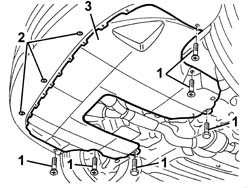

7055B54 UNDER-ENGINE GUARD - R R
- Path
- Procedures > 70 FITTINGS > 7055 MOULDINGS ON PROTECTIONS > 7055B EXTERIOR PROTECTIONS > 7055B54 UNDER-ENGINE GUARD - R R
- Kind
- repair procedure (removal / refitting; the operation number is the code)
- Applies to
- all engines; all production periods
- Interactive page
- https://sloeber94.github.io/elrnDB-aGt/en/#/125001976
Applies to: all engines; all production periods
 Removing
Removing
 Refitting
RefittingPlace the vehicle on a lift.
Raise the car.
1. Undo the bolt fixing the protection under the engine.
2. Loosen the front bolts.
Release the mounting bracket for the front direction indicators connector on the right side of the engine protection.
3. Remove the protection under the engine.

Applies to: all engines; all production periods
Refitting
RemovingCheck that the protection under the engine is not damaged.
Position the protection and tighten the bolts.
Secure the mounting bracket for the front direction indicators connector on the right side of the engine protection.
Remove the vehicle from the lift.
Topics that link to this page (197)
- 0010T12 ENGINE OIL AND FILTER REPLACE
- 0010T20 COOLANT CHECK DENSITY AND TOP UP IF NECESSARY
- 0010T40 MANUAL GEARBOX OIL CHECK LEVEL AND TOP UP IF NECESSARY
- 0010T41 MANUAL GEARBOX OIL CHECK LEVEL AND TOP UP IF NECESSARY
- 0010T82 DIESEL SYSTEM - BLEED WATER FROM DIESEL FILTER RESERVOIR
- 0510C20 LUBRICATION SYSTEM - CHECK DELIVERY PRESSURE
- 1004B10 POWER UNIT WITH MANUAL GEARBOX - R + R
- 1004B24 POWER UNIT WITH MANUAL GEARBOX WITH HYDRAULIC SELECTION - R R
- 1008A42 GEAR BOX LEFT RIGID MOUNT - R R
- 1008A44 REAR RIGID MOUNT - R R
- 1008A46 CAM SHAFT LEFT RIGID MOUNT - R R
- 1008B10 POWER UNIT FRONT MOUNT (TIMING SIDE) FLEXIBLE BLOCK - REPLACE
- 1008B20 POWER UNIT INTERMEDIATE MOUNT FLEXIBLE BLOCK - REPLACE
- 1008B30 GEARBOX SIDE MOUNT FLEXIBLE BLOCK - REPLACE
- 1016C10 SINGLE CYLINDER HEAD, REMOVED - OVERHAUL
- 1016D20 LEFT CYLINDER HEAD – R.R. AND REPLACING GASKET
- 1016D24 RIGHT CYLINDER HEAD - R.R. AND GASKET REPLACING
- 1020A20 CRANK CASE OIL SUMP - R + R CLEAN SEALS FOR SEALANT APPLICATION
- 1020A30 ENGINE OIL DRAIN PLUG - REPLACE
- 1020D10 FRONT CRANK SHAFT OIL SEAL COVER - R + R AND REPLACE SEALS WITH TIMING BELT REMOVED
- 1020D12 FRONT CRANK SHAFT OIL SEAL COVER - R + R AND REPLACE SEALS
- 1020D14 FRONT CRANK SHAFT OIL SEAL COVER - R + R AND REPLACE SEALS FOR VERSIONS WITH OIL PUMP ON CRANK SHAFT, TIMING SIDE
- 1020D15 FRONT CRANKSHAFT OIL SEAL COVER-R+R AND REPLACE SEALS FOR ENGINES WITH OIL PUMP ON CRANKSHAFT AND HEAT EXCHANGER
- 1020D18 FRONT CRANK SHAFT COVER OIL SEAL - REPLACE
- 1020D26 FLYWHEEL SIDE OIL SEAL COVER - R+R
- 1020D36 FLYWHEEL END OIL SEAL - REPLACE FOR MANUAL GEARBOX WITH HYDRAULIC SELECTION VERSIONS
- 1020D38 FLYWHEEL SIDE OIL SEAL - REPLACE
- 1020D51 CRANK SHAFT REAR MOUNT - APPLY SILICONE TO MATING SURFACES
- 1020E10 OIL SEAL COVER (ONE) - L OR R - ON COUNTER-ROTATING SHAFTS - R + R AND REPLACE SEALS
- 1020E20 FRONT OIL SEAL OF ONE COUNTER-ROTATING SHAFT, L OR R - R + R
- 1024B10 ENGINE FLYWHEEL - R + R FOR VERSIONS WITH MANUAL GEARBOX
- 1024B11 ENGINE FLYWHEEL - R R FOR MANUAL GEARBOX WITH HYDRAULIC SELECTION VERSIONS
- 1028H10 PISTON WITH CONNECTING ROD - R R
- 1032B10 TOOTHED TIMING BELT - R + R FOR TIMING ADJUSTMENT OR REPLACEMENT
- 1032B46 TOOTHED DRIVE PULLEY - R + R
- 1032B52 TOOTHED DRIVEN PULLEY (ONE) - R + R
- 1032C18 MOBILE TIMING SYSTEM TENSIONER - R + R FOR 24 VALVE ENGINES
- 1032C32 FIXED TIMING SYSTEM TENSIONER (ONE) R + R
- 1032D12 TIMING SYSTEM PROTECTIVE COVER(S) - R + R
- 1036C10 CAMSHAFT IN CYLINDER HEAD - R R ON VEHICLE
- 1036L10 CAMSHAFTS IN CYLINDER HEAD EXTENSION - R R - INCLUDES CYLINDER HEAD EXTENSION REPLACEMENT IF NECESSARY
- 1036L30 FRONT OIL SEAL OF INTAKE CAMSHAFT IN CYLINDER HEAD EXTENSION REPLACE
- 1044B10 FUEL FILTER ASSEMBLY - R + R OR REPLACE
- 1044B20 FUEL FILTER FILTERING ELEMENT - REPLACE
- 1048A10 AIR CLEANER FILTERING ELEMENT - REPLACE
- 1048A14 AIR CLEANER FILTERING ELEMENT - REPLACE.
- 1048A23 COLD AIR INTAKE - R R
- 1048B14 AIR DELIVERY PIPE BETWEEN TURBO CHARGER AND HEAT EXCHANGER - REPLACE
- 1048B48 HEAT EXCHANGER DUCT - R R
- 1048B50 TURBO CHARGER INTERCOOLER - R + R
- 1056B90 SYSTEM CABLE BUNDLE - R + R
- 1060E10 PRESSURE PUMP - R R
- 1060E30 PRESSURE PUMP PULLEY - R R
- 1060E40 SUPPLEMENTARY PRESSURE PUMP - R R
- 1060G20 RPM AND TIMING SENSOR - R R
- 1060G30 WATER PRESENCE SENSOR ON FUEL FILTER R R
- 1060G70 VACUM TANK FOR CONTROLLING ENGINE AIR INTAKE R R
- 1060G90 DIESEL INJECTION WIRING HARNESS - R R
- 1064A24 VARIABLE GEOMETRY TURBOCHARGER EXHAUST MANIFOLD ASSEMBLY SLEEVELEADING TO EXHAUST PIPE R R
- 1064A28 LEFT HAND OR RIGHT HAND SLEEVE (ONE) JOINING LEFT HAND OR RIGHT HAND CYLINDER HEAD TO TURBOCHARGER - R+R
- 1072B10 INLET MANIFOLD - R + R AND REPLACE SEAL
- 1072C44 EXHAUST MANIFOLD HEAT SHIELD ON BULKHEAD - R+R
- 1072D10 MODULAR INLET MANIFOLD - R+R
- 1076A32 EXHAUST RIGID MOUNT - R R
- 1076A48 CATALYTIC CONVERTER HEAT SHIELD - R R
- 1076A70 HEAT SHIELD FOR LEFT CATALYTIC PRECONVERTER R R
- 1076A72 HEAT SHIELD FOR RIGHT CATALYTIC PRECONVERTER R R
- 1076B10 EXHAUST PIPE ASSEMBLY - R + R
- 1076B18 RIGID SECTION OF EXHAUST PIPE BETWEEN CATALYTIC CONVERTER AND SILENCER - R + R
- 1076B34 FRONT CATALYTIC CONVERTER ATTACHMENT SEAL - REPLACE
- 1076B36 FRONT CATALYTIC CONVERTER ATTACHMENT SEAL - REPLACE
- 1076B58 EXHAUST PIPE ATTACHMENT TO ENGINE SEAL/S - REPLACE
- 1076B70 EXHAUST PIPE BETWEEN PRE-CATALYTIC CONVERTER AND CATALYTIC CONVERTER - R R
- 1076B82 LEFT EXHASUST PIPE BETWEEN CATALYTIC PRECONVERTER AND CONVERTER R R
- 1076B84 RIGHT EXHAUST PIPE BETWEEN CARALYTIC PRECONVERTER AND CONVERTER R R
- 1080B38 LEFT CATALYTIC PRECONVERTER R R OR REPLACE CYLINDER HEAD GASKET
- 1080B39 RIGHT CATALYTIC PRECONVERTER R R OR REPLACE CYLINDER HEAD GASKET
- 1080B40 CATALYTIC PRE-CONVERTER - R R
- 1080B62 CATALYTIC CONVERTER - R + R
- 1080B65 CATALYTIC CONVERTER ASSEMBLY R R
- 1080B92 LEFT UPPER LAMBDA SENSOR R R
- 1080B93 RIGHT UPPER LAMBDA SENSOR R R
- 1080B96 LEFT REAR LAMBDA SENSOR ON CATALYTIC CONVERTER R R
- 1080B97 RIGHT REAR LAMBDA SENSOR ON CATALYTIC CONVERTER R R
- 1080B98 LAMBDA SENSORS (ALL) - R.R.
- 1080C80 EXHAUST GAS WATER HEAT EXCHANGER FOR EGR VALVE R R
- 1080D34 ENGINE OIL VAPOUR SEPARATOR - R + R
- 1080E28 ENABLEMENT SOLENOID FOR FLOW OF FUEL VAPOUR TO INLET - R+R
- 1080E63 FUEL VAPOR HOSE BETWEEN RIGID PIPE AND CUT OFF SOLENOID R R
- 1084A16 OIL DIP STICK PIPE - R R
- 1084A40 ENGINE OIL LEVEL SENSOR - R + R
- 1084A42 ENGINE OIL TEMPERATURE SENDER UNIT - R + R
- 1084B12 ENGINE OIL PUMP - R+R
- 1084B23 OIL PUMP CONTROL RETURN - R R
- 1084B26 EMGINE OIL INTAKE DUCT - R R
- 1084B30 ENGINE OIL FILTER R R
- 1084B34 CARTRIDGE ENGINE OIL FILTER SUPPORT - R + R
- 1084B40 ENGINE OIL DELIVERY PIPE TO TURBOCHARGER - R + R
- 1084B42 ENGINE OIL RETURN PIPE FROM TURBO - R + R
- 1084C10 STAFFA DI SUPPORTO DEL RADIATORE RAFFREDDAMENTO OLIO MOTORE - R.R.
- 1084C12 SCAMBIATORE DI CALORE OLIO MOTORE COMPLETO DEI TUBI DI ENTRATA E USCITA LIQUIDO DI RAFFREDDAMENTO - S.R.
- 1084C34 ENGINE OIL COOLING RADIATOR - R + R
- 1084C36 ENGINE OIL COOLING RADIATOR SUPPORT BRACKET - R + R
- 1084C38 ENGINE OIL DELIVERY AND RETURN PIPES TO COOLING RADIATOR - R + R
- 1084C40 CONVOGLIATORE ARIA PER RADIATORE RAFFREDDAMENTO OLIO MOTORE - S.R.
- 1088B20 ENGINE COOLING RADIATOR - R + R
- 1088C10 WATER PUMP - R + R
- 1088C40 THERMOSTAT- R + R
- 1088D10 LOWER SLEEVE FOR COOLANT OUTLET FROM RADIATOR - R + R
- 1088D14 UPPER SLEEVE FOR COOLANT INLET TO RADIATOR - R + R
- 1088D24 RIGID PIPE FOR COOLANT INLET TO WATER PUMP - R + R
- 1088E10 RADIATOR COOLING FAN - R + R
- 1088E11 FANS WITH SINGLE ENGINE DUCT - R+R
- 1092A10 CRANKSHAFT SERVICES PULLEY - R.R.
- 1092E10 COUNTER-ROTATING SHAFT DRIVE TOOTHED BELT - R + R
- 1092E16 COUNTER-ROTATING SHAFT DRIVE TOOTHED BELT TENSIONER - R + R
- 1092E22 COUNTER-ROTATING SHAFT DRIVE TOOTHED BELT DRIVE PULLEY - R + R
- 1092E26 COUNTER ROTATING SHAFT PULLEY - R + R
- 1092G10 SINGLE ENGINE BELT R R
- 1092G14 ENGINE COMPONENT SINGLE BELT MOBILE TENSIONER - R + R
- 1092G20 ENGINE COMPONENT SINGLE BELT FIXED TENSIONER - ONE - R + R
- 1810A20 CLUTCH - R + R
- 1810A28 CLUTCH - R R FOR MANUAL GEARBOX WITH HYDRAULIC SELECTION VERSIONS
- 1820A24 THRUST BEARING LINKAGE - R + R
- 1820B20 MASTER CYLINDER (PUMP) - R + R
- 2110A10 MANUAL GEARBOX AND DIFFERENTIAL - R + R
- 2110A11 MANUAL GEARBOX WITH DIFFERENTIAL - R R FOR VERSIONS WITH HYDRAULIC SELECTION
- 2110B40 5TH SPEED GEARS OF MANUAL GEARBOX WITH DIFFERENTIAL - R + R ON VEHICLE
- 2110C22 GEAR INPUT SHAFT SEALS - R R
- 2110C24 SEALS FOR GEARBOX INPUT SHAFT - R R FOR MANUAL GEARBOX WITH HYDRAULIC SELECTION VERSIONS
- 2110C30 GEARBOX REAR COVER - R + R.
- 2110D56 RIGHT HAND FLANGE ON DIFFERENTIAL - R+R
- 2110D63 RH DIFFERENTIAL SHAFT OIL SEAL - R R
- 2125C70 GEARBOX/BRAKE LEVER MOUNT - R R
- 2127C10 SUPPORT FOR HYDRAULIC CIRCUIT RESERVOIR AND SYSTEM PUMP - R R
- 2127C18 PIPE FROM HYDRAULIC CIRCUIT FLUID RESERVOIR TO HYDRAULIC SPEED SELECTION DRIVE PUMP - R R
- 2127C30 HYDRAULIC SPEED SELECTION SYSTEM PUMP - R R
- 2127C40 HYDRAULIC SPEED SELECTION HYDRAULIC ACTUATOR UNIT AND CLUTCH - R R
- 2127E52 HYDRAULIC SELECTION GEARBOX INPUT SHAFT SPEED SENSOR - R R
- 2710A31 INTERMEDIATE DRIVE SHAFT - R R
- 2710A35 INTERMEDIATE DRIVE SHAFT MOUNT - R R
- 3330D02 BRAKE SERVO/BRAKE PUMP ASSEMBLY - R R
- 3340B56 RIGID PIPE FROM HYDRAULIC CONTROL UNIT TO RIGHT FRONT BRAKE - R.R.
- 4130A10 POWER STEERING BOX - R+R - CHECK TOW-IN IF NECESSARY SEPARATELY - INCLUDES BLEEDING
- 4130B20 POWER STEERING PUMP R R
- 4130B32 POWER STEERING PUMP MOUNT - R R
- 4130B34 SUPPLY PIPE FROM FLUID RESEVIOR TO POWER STEERING PUMP R R
- 4130B36 SUPPLY PIPE FROM FLUID RESEVIOR TO POWER STEERING PUMP INLET PIPE R R
- 4130B38 POWER STEERING PUMP INLET PIPE FROM FLUID RESEVIOR PIPE OR INTERMEDIATE RIGID PIPE R R
- 4130B40 OUTLET PIPE FROM PUMP TO POWER STEERING CASE R R
- 4130B49 RETURN PIPE FROM POWER STEERING CASE TO HEAT EXCHANGER PIPE R R
- 4130B52 HEAT EXCHANGER PIPE - R+R
- 4130B54 RETURN PIPE FROM HEAT EXCHANGER PIPE TO POWER STEERING FLUID RESEVIOR R R
- 4130B70 TUBAZIONE INTERMEDIA DI RITORNO TRA SCATOLA SERVOSTERZO E SCAMBIATORE DI CALORE/RADIATORE RAFFREDDAMENTO LIQUIDO SERVOSTERZO - S.R.
- 4130B72 RETURN PIPE FROM POWER STEERING CASE TO POWER STEERING FLUID RESEVIOR R R
- 4130B78 RETURN PIPE FROM POWER STEERING CASE TO POWER STEERING FLUID RESEVIOR R R
- 4130B98 RADIATORE RAFFREDDAMENTO LIQUIDO SERVOSTERZO - S.R.
- 4130B99 RETURN PIPE FROM POWER STEERING CASE TO POWER STEERING FLUID RESEVIOR R R
- 4410B40 LOWER WISHBONE (WITH BALLJOINT) OF LEFT OR RIGHT FRONT SUSPENSION (ONE) - R+R -CHECK WHEEL GEOMETRY SEPARATELY
- 4410c10 FRONT SUSPENSION STABILIZER BAR - R+R - CHECK WHEEL GEOMETRY SEPARATELY
- 4410D13 FRONT SUSPENSION BEAM - R R
- 4410D15 FRONT SUSPENSION BEAM COMPLETE WITH WISHBONES AND STABILISER BAR R R
- 4450C10 FRONT PILLAR (ONE), L/H OR R/H COMPLETE WITH WHEEL HUB - R+R WITH WHEEL REMOVED - CHECK WHEEL GEOMETRY SEPARATELY
- 4450C28 FRONT WHEEL HUB - R R
- 4450C32 ONE FRONT WHEEL HUB BEARING, LH OR RH - REPLACE
- 5040A20 AIR CONDITIONER COMPRESSOR - R+R - INCLUDES FLUID LEVEL CHECK AND TOP UP IF NECESSARY
- 5040A26 COMPRESSOR MOUNT - R R
- 5040A40 AIR CONDITIONER CONDENSER - R+R
- 5040A44 AIR CONDITIONER DEHYDRATING FILTER/ACCUMULATOR - R+R
- 5040A50 PIPE FROM COMPRESSOR TO AIR CONDITIONER CONDENSER - R+R
- 5040A60 PIPE FROM CONDENSER TO EVAPORATOR (EXPANSION PIPE) - R+R
- 5040A64 PIPE FROM EVAPORATOR TO DEHYDRATING FILTER/ACCUMULATOR - R+R
- 5040A73 COMPRESSOR INLET PIPE - R R
- 5040A76 TANDEM PIPE FOR DELIVERY AND RETURN FROM EVAPORATOR RR
- 5040A80 EXPANSION/CONNECTION PIPE - R R
- 5040B14 AIR CONDITIONER SYSTEM MULTI-LEVEL PRESSURE SWITCH - R+R
- 5040B30 EXPANSION VALVE (TUBE ORIFICE) - R+R
- 5040C15 AIR CONDITIONER HOUSING - R R WITH FACIA DISCONNECTED FOR VERSIONS WITH PASSENGER AIRBAG
- 5040C50 AIR CONDITIONER HEATER RADIATOR - R+R
- 5040C64 A/C MANUAL CONTROL SWITCH (ONE) - R+R
- 5040D84 AIR CONDITIONER LEFT HAND AIR MIXER FLAP CONTROL MOTOR - R R
- 5040D90 AIR CONDITIONER SYSTEM WIRING BUNDLE - R R
- 5050D08 HEADLAMP WASHER JET/S - R R
- 5050D13 HEADLAMP WASHER SYSTEM TYPES AND FITTINGS - R R
- 5505C02 WIRING INCORPORATED IN FRONT BUMPER RR
- 5505C28 INTERGRATED ENGINE BAY AND ABS SYSTEM WIRING - R R
- 5505C34 INTERGRATED INSTRUMENT UNDER FACIA FRONT AIR BAG WIRING - R R
- 5510C34 RPM AND TIMING SENSOR (SINGLE) - R+R
- 5510C42 KNOCK SENSOR - R+R
- 5510C46 FLYWHEEL SIDE KNOCK SENSOR - R+R
- 5510C48 TIMING SIDE KNOCK SENSOR - R+R
- 5520B10 STARTER MOTOR - R+R
- 5530A10 ALTERNATOR - R+R
- 7040A97 FACIA TRIM SUPPORT BEAM - R R
- 7055A39 LEFT SIDE FRONT GRILLE R R
- 7055A40 RADIATOR SHIELD - R R
- 7210E10 R.R. FRONT BUMPER